Handbuch für Käuferinnen und Käufer
Kurse finden, kaufen und nutzen – Schritt für Schritt
Dieses Handbuch beschreibt die Kursplattform aus Sicht der Kundinnen und Kunden. Die Abbildungen zeigen die Beispielplattform „Beispiel-Akademie“ mit erfundenen Kursen und Daten.
Inhaltsverzeichnis
- ★Schnellstart in fünf Schritten
- 1Überblick
- 2Registrierung und E-Mail-Bestätigung
- 3Anmelden und Passwort
- 4Kurse finden und auswählen
- 5Einen Kurs kaufen
- 6Kurse und Lektionen nutzen
- 7Mein Konto, Bestellungen und Belege
- 8Abo verwalten und kündigen
- 9Widerruf und Erstattung
- 10Datenschutz und Konto löschen
- 11Hilfe und Kontakt
★ Schnellstart in fünf Schritten
- Konto anlegen: Klicke oben auf Registrieren und trage E-Mail-Adresse und Passwort ein (mindestens 8 Zeichen). Setze das Häkchen bei den Bedingungen (Kapitel 2).
- E-Mail bestätigen: Öffne den Link in der Bestätigungs-E-Mail. Ohne bestätigte Adresse ist kein Kauf möglich (Kapitel 2).
- Kurs wählen: Öffne einen Kurs in der Kursliste und lies Beschreibung, Lektionen und Preis (Kapitel 4).
- Kaufen: Setze das Häkchen zur Zustimmung, klicke auf den Kaufknopf und bezahle auf der Zahlungsseite von Stripe (Kapitel 5).
- Lernen: Deine Kurse findest du unter Meine Kurse (Kapitel 6). Hilfe gibt es in Kapitel 11.
1 Überblick
Auf der Kursplattform kaufst du Online-Kurse und nutzt sie direkt im Browser. Ein Kurs besteht aus Lektionen mit Text, Video, PDF-Dokumenten oder Audio. Nach dem Kauf findest du deine Kurse unter Meine Kurse, solange dein Zugang besteht und du angemeldet bist.
Was du brauchst
- einen aktuellen Webbrowser (Computer, Tablet oder Smartphone),
- eine eigene E-Mail-Adresse, auf die du Zugriff hast,
- für kostenpflichtige Kurse eine Zahlungsmöglichkeit, die auf der Zahlungsseite angeboten wird (zum Beispiel eine Bankkarte).
Die Kopfzeile
Oben auf jeder Seite findest du das Menü. Als Gast siehst du Kurse, Anmelden und Registrieren. Nach der Anmeldung erscheinen Meine Kurse, Mein Konto und Abmelden.
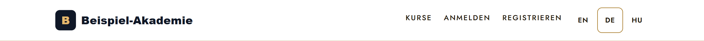
Sprache wählen
Rechts in der Kopfzeile wählst du die Sprache: EN (Englisch), DE (Deutsch) oder HU (Ungarisch). Die Plattform merkt sich deine Wahl in diesem Browser und, wenn du angemeldet bist, in deinem Konto. Die Seite lädt danach in der gewählten Sprache neu.
2 Registrierung und E-Mail-Bestätigung
Um Kurse zu kaufen, brauchst du ein Konto. Die Kursliste und die Kursseiten kannst du auch ohne Konto ansehen.
Konto anlegen
- Klicke in der Kopfzeile auf Registrieren.
- Gib deine E-Mail-Adresse und ein Passwort mit mindestens 8 Zeichen ein. Mit dem Augen-Symbol im Passwortfeld kannst du das Passwort kurz anzeigen.
- Lies die Teilnahmebedingungen und die Datenschutzerklärung (Links im Formular) und setze das Häkchen. Ohne dieses Häkchen ist keine Registrierung möglich.
- Klicke auf Registrieren.
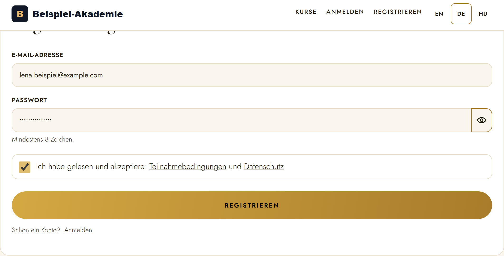
Nach der Registrierung bist du sofort angemeldet. Oben erscheint ein Hinweis, dass du deine E-Mail-Adresse noch bestätigen musst. Gibt es zu der Adresse bereits ein Konto, zeigt die Plattform das an und bietet dir den Link Passwort vergessen? an.
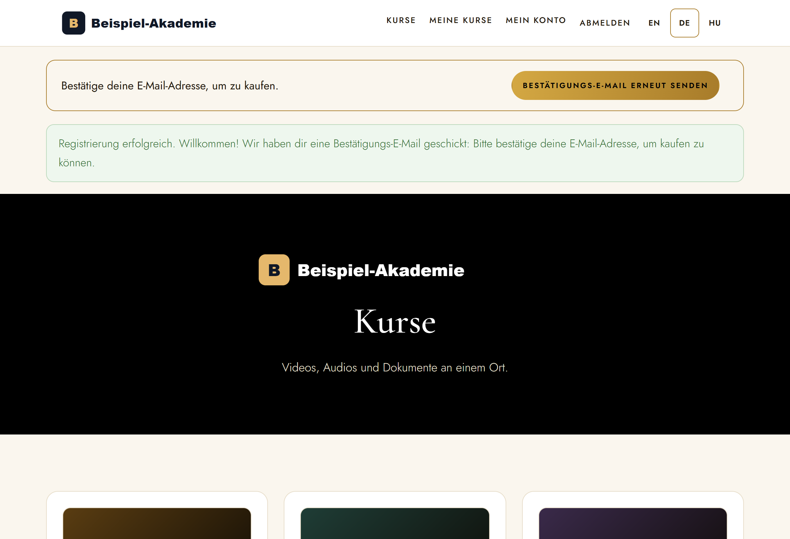
E-Mail-Adresse bestätigen
Du erhältst eine E-Mail mit dem Knopf E-Mail-Adresse bestätigen. Der Link ist 24 Stunden gültig und kann nur einmal verwendet werden.
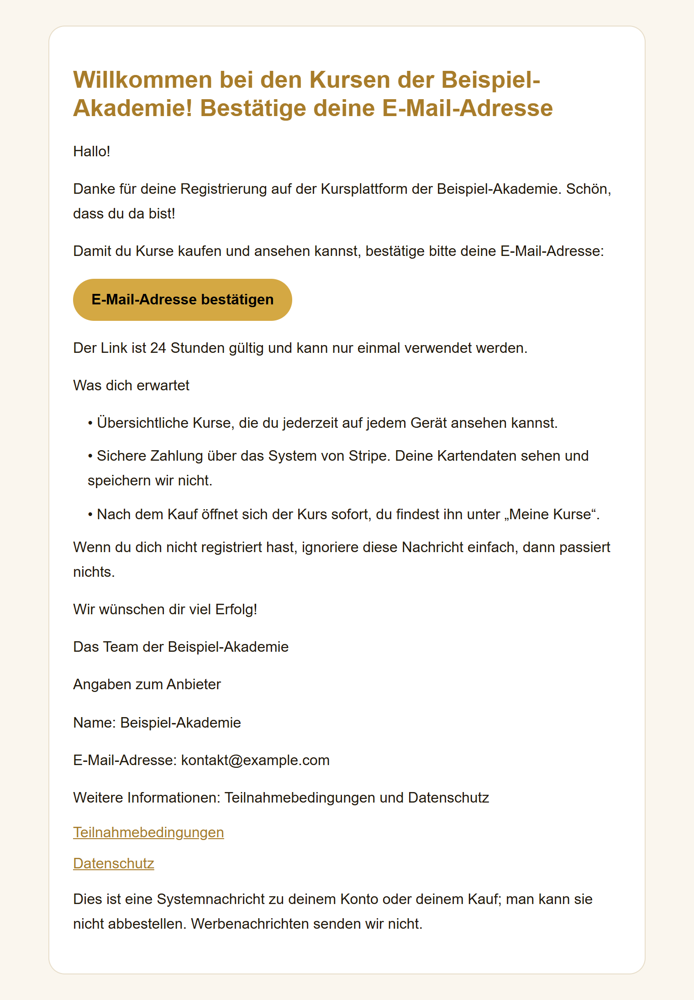
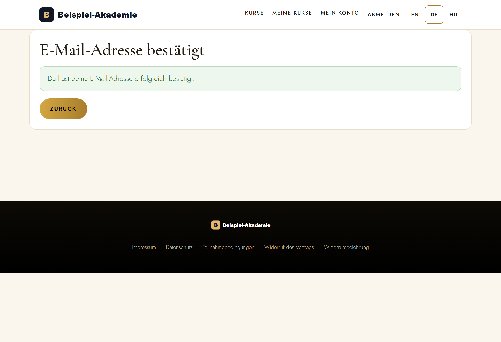
Keine E-Mail erhalten? Sieh im Spam-Ordner nach. Über den Knopf Bestätigungs-E-Mail erneut senden im Hinweis oben auf der Seite kannst du eine neue E-Mail anfordern. Ein neuer Link ersetzt den alten.
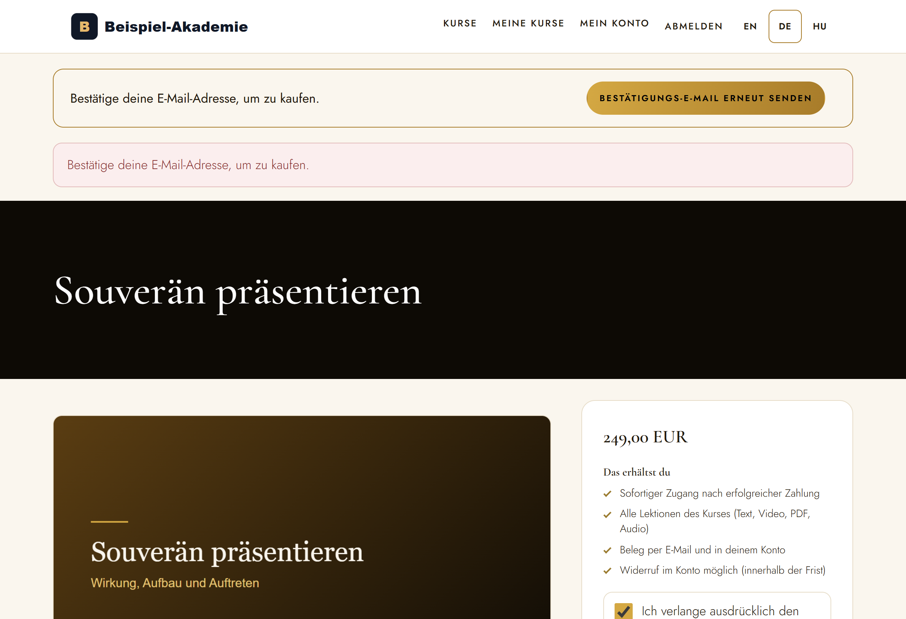
3 Anmelden und Passwort
Anmelden
- Klicke auf Anmelden.
- Gib E-Mail-Adresse und Passwort ein und klicke auf Anmelden.
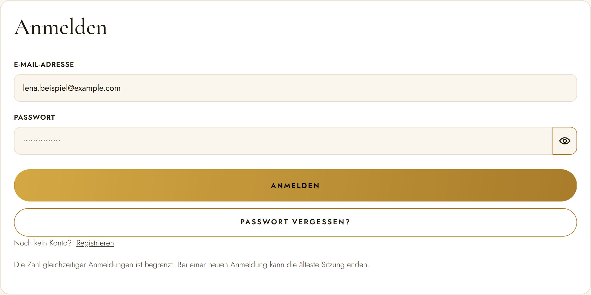
Wolltest du gerade einen Kurs kaufen oder öffnen, bringt dich die Plattform nach der Anmeldung dorthin zurück.
- Mehrere Geräte: Die Zahl gleichzeitiger Anmeldungen ist begrenzt. Meldest du dich auf einem weiteren Gerät an, kann die älteste Sitzung enden. Du meldest dich dort dann einfach neu an.
- Zu viele Fehlversuche: Nach zu vielen falschen Eingaben sperrt die Plattform die Anmeldung vorübergehend („Zu viele Versuche. Bitte versuche es später erneut.“). Warte dann etwas oder setze dein Passwort zurück.
- Abmelden: Klicke in der Kopfzeile auf Abmelden, besonders an gemeinsam genutzten Geräten.
Passwort vergessen
- Klicke im Anmeldeformular auf Passwort vergessen?
- Gib deine E-Mail-Adresse ein und klicke auf Link anfordern. Aus Sicherheitsgründen sagt die Plattform nicht, ob es zu der Adresse ein Konto gibt.
- Öffne den Link in der E-Mail. Er ist 30 Minuten gültig und kann nur einmal verwendet werden.
- Gib das neue Passwort zweimal ein und klicke auf Passwort zurücksetzen. Danach meldest du dich mit dem neuen Passwort an. Alle bisherigen Anmeldungen werden dabei beendet.
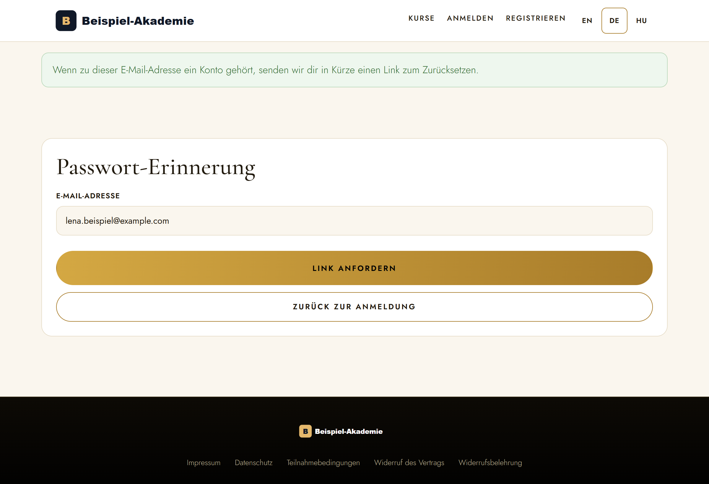
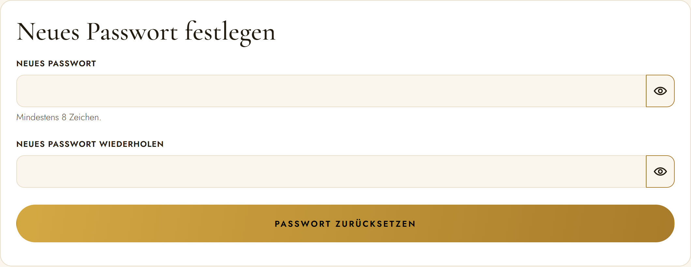
Passwort ändern
Angemeldet änderst du dein Passwort unter Mein Konto → Passwort ändern (auch unter Meine Kurse verlinkt): aktuelles Passwort eingeben, neues Passwort zweimal eingeben, Passwort speichern.
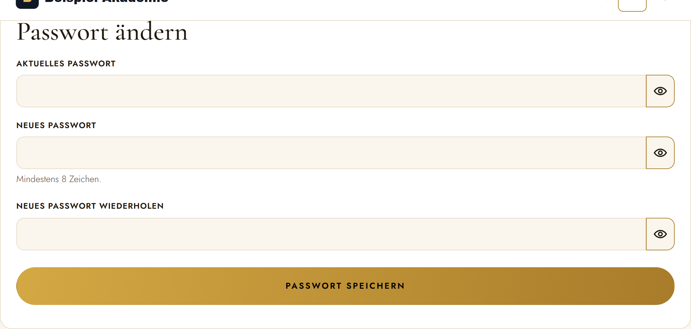
4 Kurse finden und auswählen
Die Kursliste
Die Startseite (Kurse) zeigt alle angebotenen Kurse mit Titelbild, Kurzbeschreibung und Preis. Kurse, die du schon besitzt, sind mit Gekauft markiert und lassen sich über die Schaltfläche Öffnen direkt öffnen. Mit Ansehen gelangst du zur Kursseite.
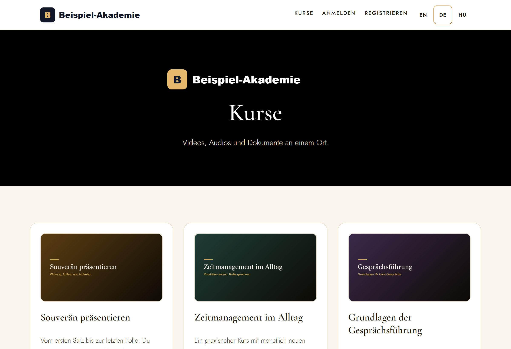
Die Kursseite
Auf der Kursseite findest du alles, was du für deine Entscheidung brauchst:
- Titelbild oder einen Kurs-Trailer (falls der Anbieter einen hinterlegt hat),
- die Beschreibung und den Kasten Dein Anbieter mit einer Kontaktadresse für Fragen vor dem Kauf,
- Das lernst du: die Lernziele des Kurses,
- Lektionen: alle Lektionen mit Titel, gegliedert nach Abschnitten. Vor dem Kauf sind sie mit Nach dem Kauf verfügbar gekennzeichnet,
- rechts (auf dem Smartphone unter dem Trailer) den Kaufkasten mit Preis und Kaufknopf.
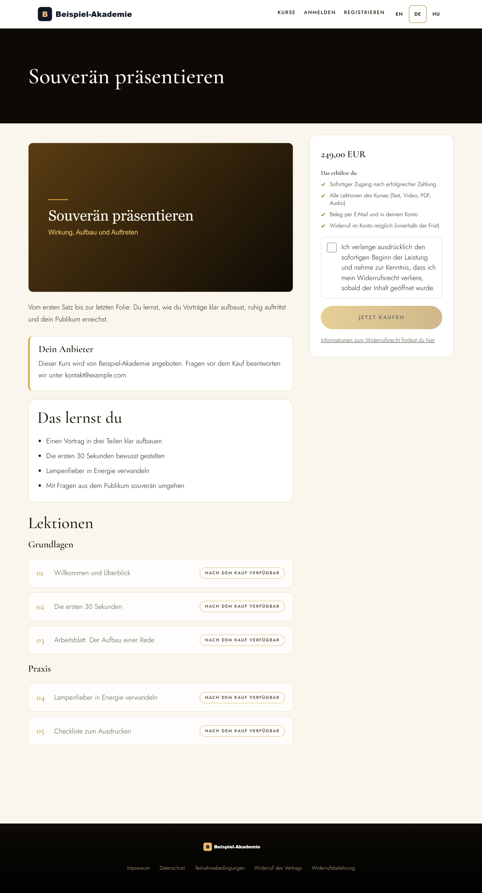
5 Einen Kurs kaufen
Ein Kurs kann als Einmalkauf, als Abo oder kostenlos angeboten werden. Was angeboten wird, siehst du im Kaufkasten. Voraussetzung für jeden Kauf: Du bist angemeldet und hast deine E-Mail-Adresse bestätigt (siehe Kapitel 2).
Schritt 1: Zustimmung setzen
Bei kostenpflichtigen Kursen ist der Kaufknopf zunächst gesperrt. Setze zuerst das Häkchen:
„Ich verlange ausdrücklich den sofortigen Beginn der Leistung und nehme zur Kenntnis, dass ich mein Widerrufsrecht verliere, sobald der Inhalt geöffnet wurde.“
Das ist der Wortlaut, den die Plattform an dieser Stelle anzeigt. Die rechtlichen Folgen erläutert die Widerrufsbelehrung des Anbieters.
Erst danach wird Jetzt kaufen (bzw. Abo abschließen) aktiv. Die Plattform speichert den Zeitpunkt deiner Zustimmung. Welche Folgen das für einen späteren Widerruf hat, steht in Kapitel 9. Unter dem Kaufknopf führt ein Link zu den Informationen zum Widerrufsrecht.
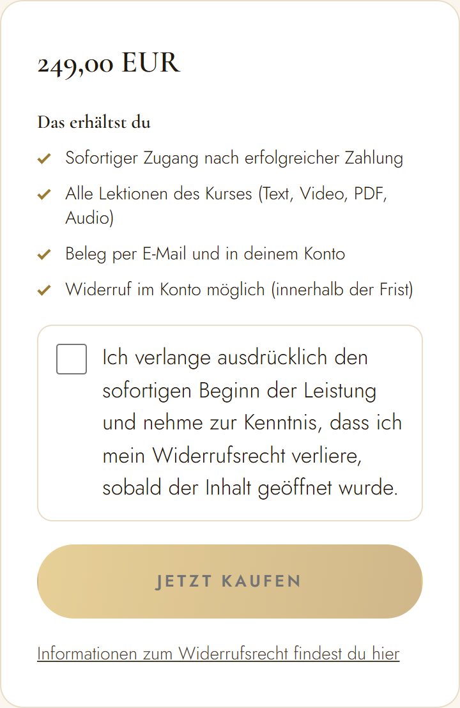
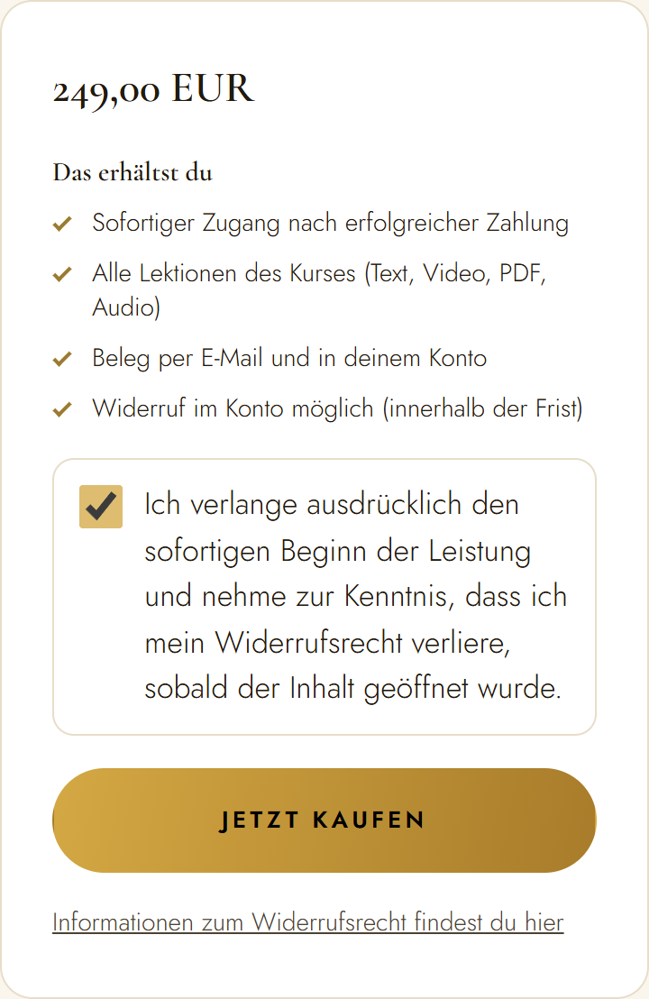
Schritt 2: Bezahlen
- Klicke auf Jetzt kaufen. Die Meldung „Weiterleitung zur Zahlung …“ erscheint.
- Du gelangst auf die sichere Zahlungsseite des Zahlungsdienstleisters Stripe. Dort gibst du deine Zahlungsdaten ein. Deine Kartendaten sieht und speichert die Kursplattform nicht.
- Auf der Zahlungsseite ist eine Rechnungsadresse anzugeben. Firmenkunden können zusätzlich eine Steuernummer eintragen (freiwillig).
- Bestätige die Zahlung. Danach führt dich Stripe zur Kursplattform zurück.
Schritt 3: Bestätigung
Nach der Rückkehr zeigt die Plattform „Vielen Dank! Wir prüfen die Zahlung …“. Der Zugang entsteht erst, wenn Stripe die Zahlung bestätigt hat. Das dauert meist nur Sekunden. Sobald die Zahlung eingegangen ist, erscheint der Knopf Öffnen.
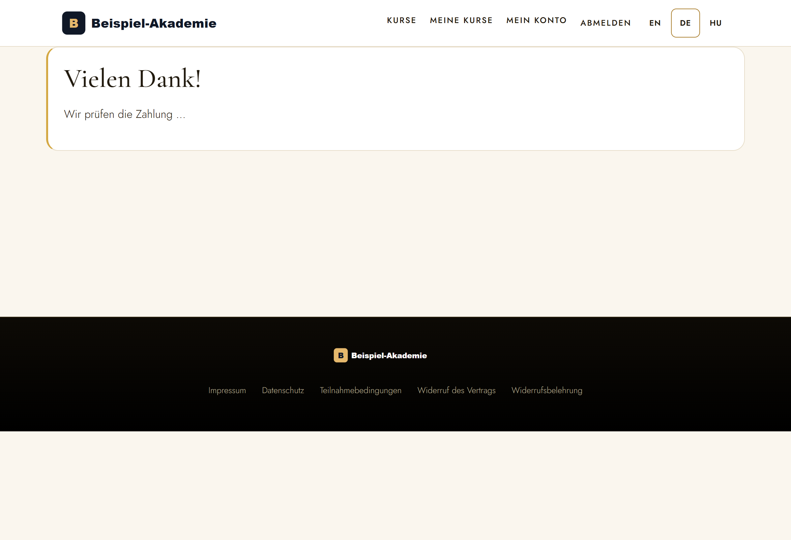
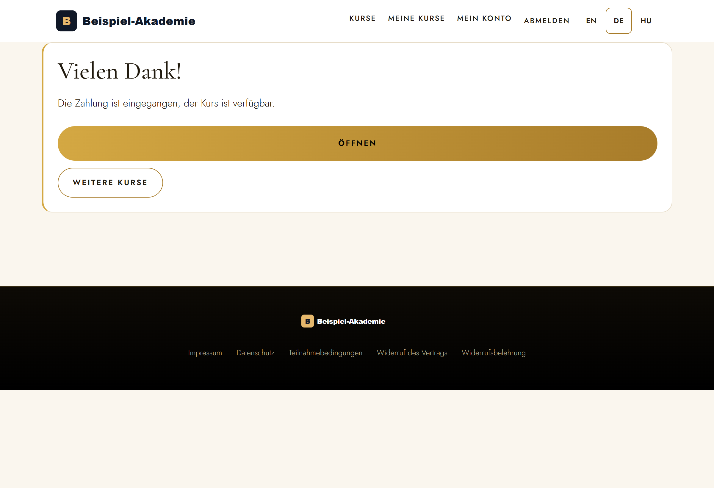
Dauert die Prüfung länger, erscheint der Hinweis, später unter Meine Kurse nachzusehen. Du musst nichts erneut bezahlen.
Zusätzlich erhältst du eine Kaufbestätigung per E-Mail mit Kurs, Betrag, Datum, Bestellnummer, den Angaben zum Anbieter, dem Zeitpunkt deiner Zustimmung, einem Knopf zum Kurs, einem Verweis auf den Zahlungsbeleg und der Widerrufsbelehrung.
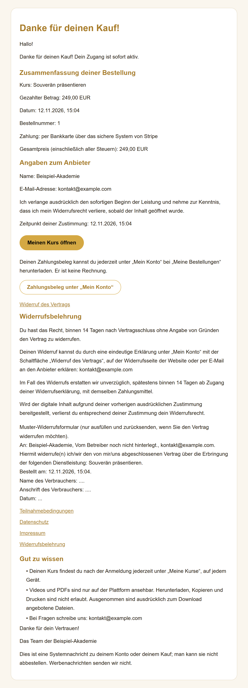
Zahlung abgebrochen
Brichst du auf der Zahlungsseite ab, zeigt die Plattform „Die Zahlung wurde abgebrochen“. Ob eine Zahlung erfasst wurde, siehst du unter Meine Bestellungen. Mit Zurück zum Kurs kannst du es erneut versuchen.
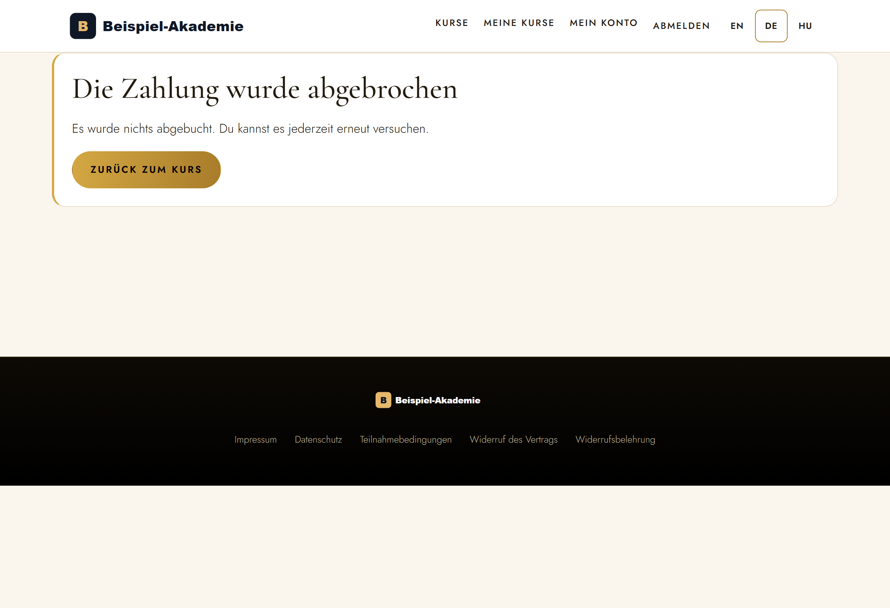
Abo abschließen
Bietet der Anbieter einen Kurs auch als Abo an, steht im Kaufkasten zusätzlich Abo abschließen mit Preis und Zeitraum (monatlich oder jährlich). Auch hier ist das Häkchen Pflicht. Das Abo verlängert sich automatisch, bis du es kündigst (Kapitel 8). Für einen Kurs kann immer nur ein Abo gleichzeitig laufen.
Kostenlose Kurse
Bei kostenlosen Kursen steht Kostenloser Zugang. Ein Klick genügt: Es gibt keine Zahlungsseite, der Kurs ist sofort freigeschaltet. Der Anbieter kann dir einen Kurs auch direkt kostenlos freischalten. Du erhältst dann die E-Mail „Dein Zugang ist freigeschaltet“, und der Kurs steht unter Meine Kurse.
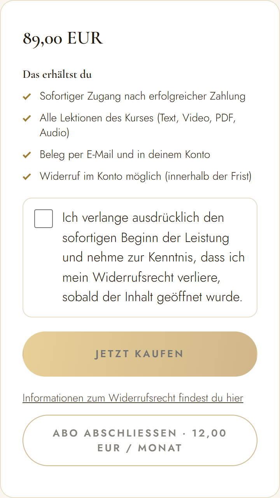
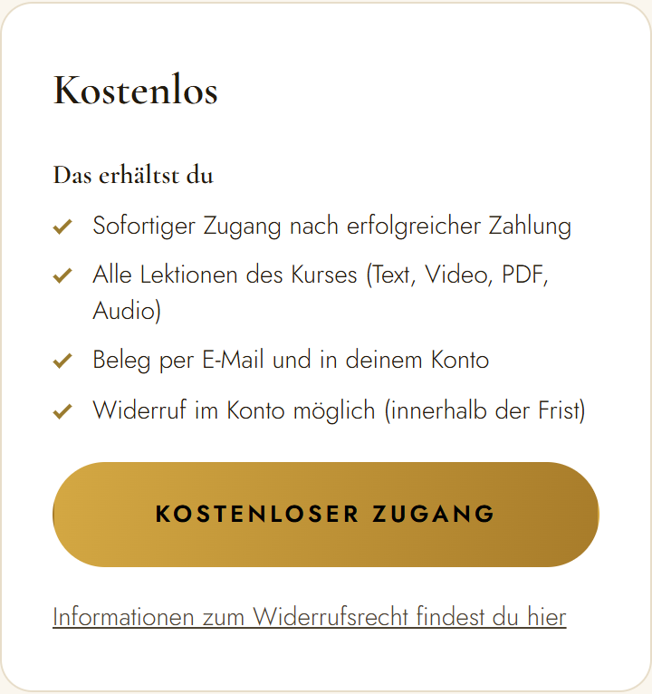
6 Kurse und Lektionen nutzen
Meine Kurse
Unter Meine Kurse stehen alle Kurse, auf die du Zugang hast, mit dem Hinweis Zugang aktiv. Bei Abo-Kursen zeigt ein zweites Feld den Stand des Abos: Aktiv, Gekündigt, Zahlung ausstehend oder Beendet. Oben findest du die Knöpfe Mein Abo verwalten und Passwort ändern.
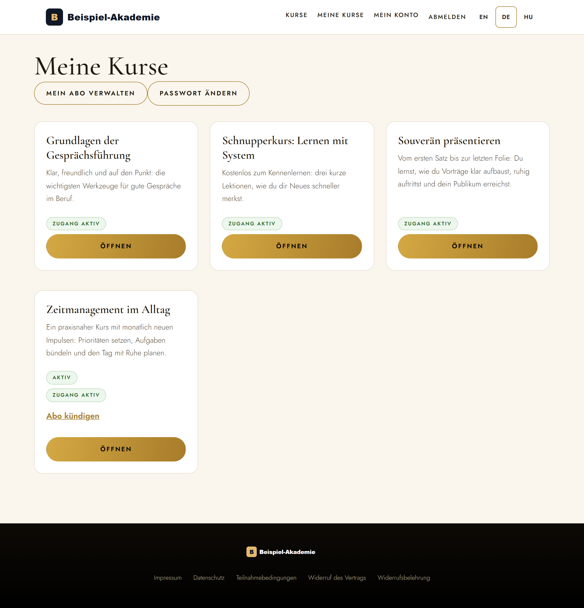
Kursübersicht
Mit Öffnen gelangst du zur Übersicht des Kurses. Jede Lektion zeigt ihren Titel und ihre Art (Text, Video, PDF, Audio). Mit Öffnen startest du die Lektion.
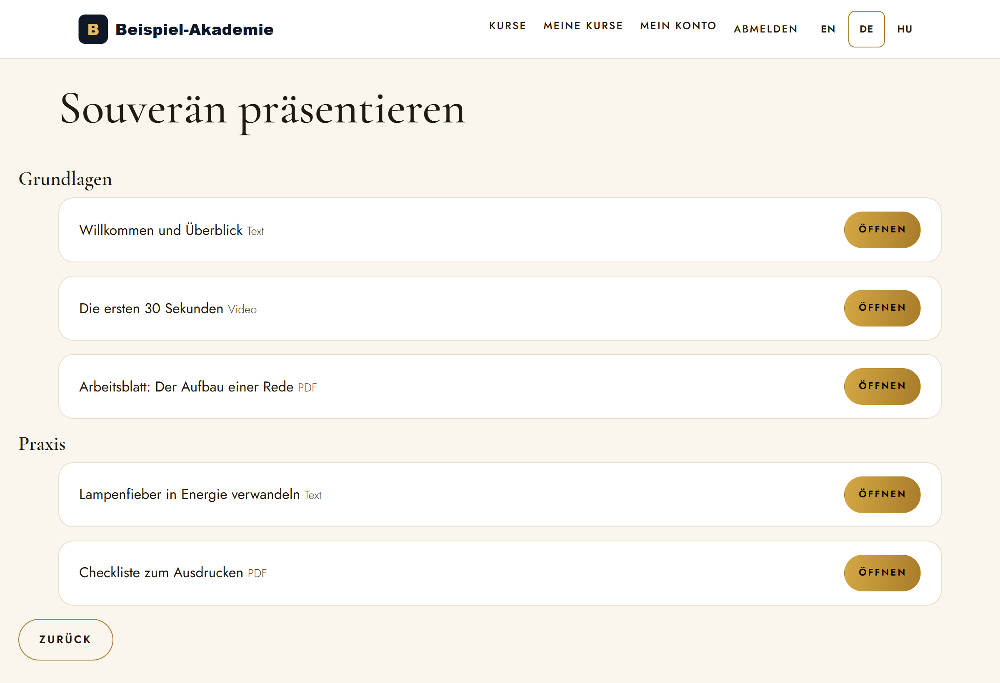
Lektionen
Am Ende jeder Lektion führen Vorherige Lektion und Nächste Lektion durch den Kurs; Zurück bringt dich zur Kursübersicht.
- Text: Der Inhalt erscheint direkt auf der Seite.
- Video und Audio: Abspielen im Player der Plattform. Je nach Einrichtung des Anbieters kann ein Video auch über einen angebundenen Video-Dienst laufen.
- PDF: Das Dokument wird in einer eigenen Ansicht angezeigt. Mit den Pfeilen blätterst du, mit − und + verkleinerst und vergrößerst du die Ansicht.
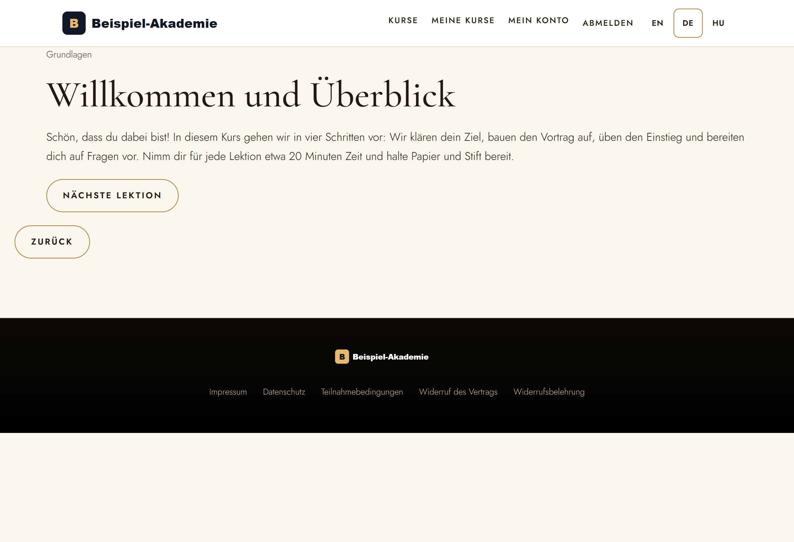
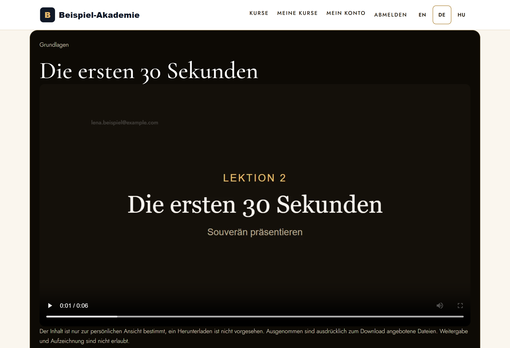
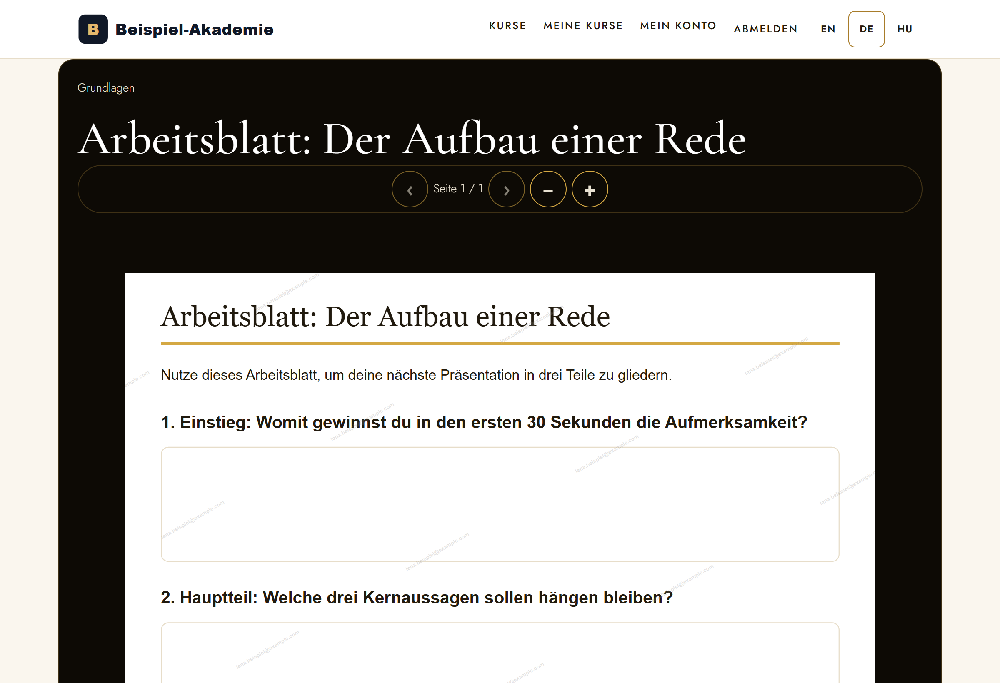
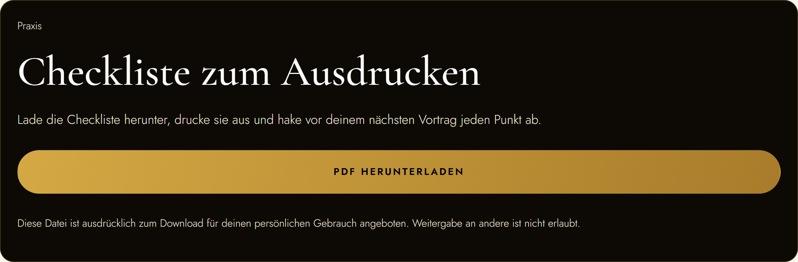
Kann eine Datei gerade nicht geladen werden, erscheint „Die Datei konnte jetzt nicht geladen werden. Bitte versuche es später erneut.“ Lade die Seite nach kurzer Zeit neu.
7 Mein Konto, Bestellungen und Belege
Unter Mein Konto findest du deine Daten, alle Bestellungen und die Einstellungen zu deinem Konto.
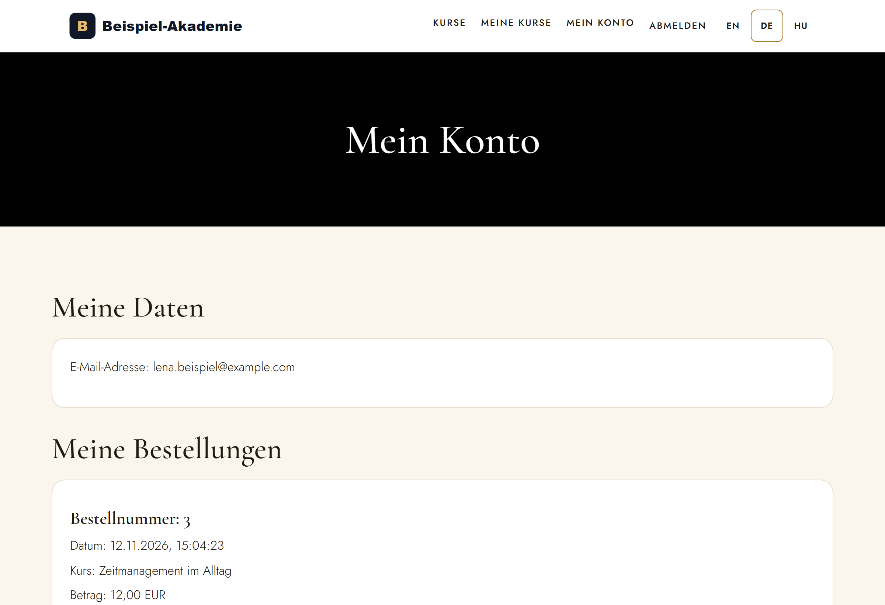
Meine Bestellungen
Jede Bestellung zeigt Bestellnummer, Datum, Kurs, Betrag, Art (Einmalkauf oder Abo) und Status:
| Status | Bedeutung |
|---|---|
| Bezahlt | Die Zahlung ist bestätigt, der Kurs ist freigeschaltet. |
| In Prüfung | Der Zahlungsvorgang wird noch geprüft. Bis dahin ist der Kurs nicht freigeschaltet. |
| Erstattet | Der Betrag wurde vollständig erstattet. Der Zugang aus diesem Kauf ist beendet. |
| Zum Periodenende gekündigt | Das Abo ist gekündigt und endet mit dem bezahlten Zeitraum. |
Je nach Bestellung stehen diese Knöpfe zur Verfügung:
- Öffnen – zum Kurs,
- Zahlungsbeleg – öffnet den Zahlungsbeleg in einem neuen Fenster beim Zahlungsdienstleister Stripe. Dort kannst du ihn ansehen und speichern. Der Zahlungsbeleg ist keine Rechnung,
- Widerruf des Vertrags – siehe Kapitel 9,
- bei Abos Abo kündigen und Mein Abo verwalten – siehe Kapitel 8.
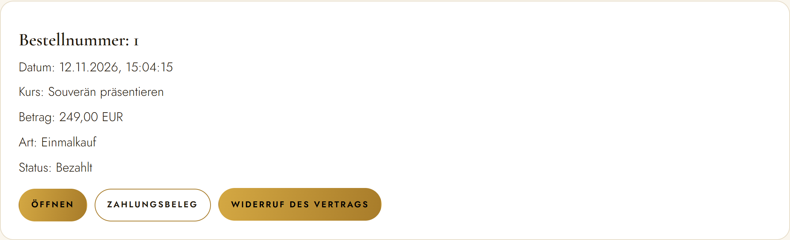
E-Mail-Adresse ändern
- Gib unter E-Mail-Adresse ändern die neue Adresse und dein aktuelles Passwort ein.
- Klicke auf Bestätigungsmail senden. Die Bestätigung geht an die neue Adresse; der Link ist 24 Stunden gültig.
- Öffne den Link. Danach gilt die neue Adresse und du meldest dich neu an. Die alte Adresse erhält eine Sicherheitsmitteilung.
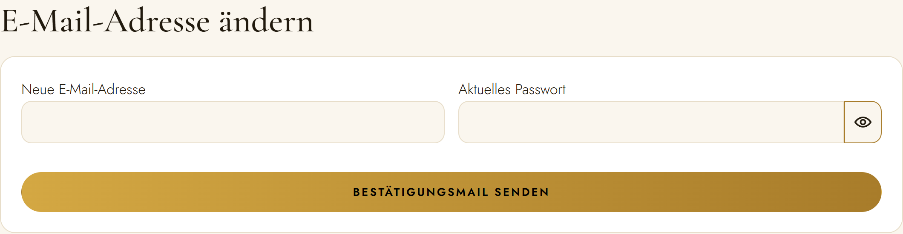
8 Abo verwalten und kündigen
Hast du einen Kurs im Abo, steht er unter Mein Konto → Meine Bestellungen mit der Art Abo.
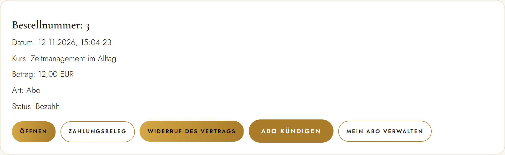
Abo kündigen
- Klicke bei der Abo-Bestellung auf Abo kündigen. (Unter Meine Kurse führt der Link Abo kündigen ebenfalls hierher.)
- Du gelangst zum Kundenportal von Stripe und bestätigst dort die Kündigung.
- Danach kehrst du zu Mein Konto zurück und siehst „Die Kündigung deines Abos wurde erfasst.“
Nach der Kündigung zeigt die Bestellung „Gekündigt. Dein Zugang besteht bis: …“. Bis zum Ende des bereits bezahlten Zeitraums kannst du den Kurs weiter nutzen; danach verlängert sich das Abo nicht mehr; bereits entstandene Forderungen bleiben unberührt.
Mein Abo verwalten
Der Knopf Mein Abo verwalten öffnet das Kundenportal von Stripe. Welche Möglichkeiten dort angeboten werden (zum Beispiel Zahlungsmethode ändern oder Rechnungen ansehen), hängt von der Einrichtung des Anbieters ab. Das Kundenportal und die Kündigungsseite werden von Stripe angezeigt und sind hier nicht abgebildet.
9 Widerruf und Erstattung
Dieses Kapitel beschreibt, wie die Plattform eine Widerrufserklärung technisch verarbeitet. Es ist keine Rechtsberatung. Maßgeblich sind die Widerrufsbelehrung und die Teilnahmebedingungen des Anbieters (Links in der Fußzeile und in der Kaufbestätigung). Gesetzliche Verbraucherrechte bleiben unberührt.
Widerruf erklären
- Öffne Mein Konto und suche die Bestellung unter Meine Bestellungen.
- Klicke auf Widerruf des Vertrags. Die Plattform zeigt Kurs, Betrag und Bestelldatum.
- Klicke auf Weiter zur Bestätigung.
- Bestätige die Erklärung „Ich erkläre hiermit den Widerruf des oben bezeichneten Vertrags.“ mit Widerruf bestätigen.
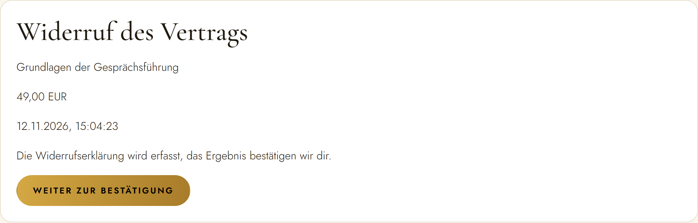
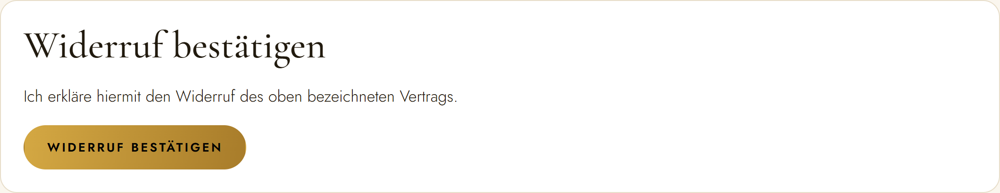
Den Link Widerruf des Vertrags findest du auch in der Fußzeile jeder Seite und in der Kaufbestätigung. Du kannst den Widerruf außerdem per E-Mail an den Anbieter erklären.
Was die Plattform danach tut
Die Plattform erfasst deine Erklärung mit Datum und Uhrzeit und prüft sie automatisch:
| Prüfung | Ergebnis |
|---|---|
| Liegt die Bestellung innerhalb der Widerrufsfrist? (Standardeinstellung der Software: 14 Tage ab Bestellung) | Die Plattform prüft standardmäßig einen Zeitraum von 14 Tagen. Wird die Erklärung automatisch abgelehnt, kannst du dich zur Prüfung deiner gesetzlichen Rechte an den Anbieter wenden. |
| Hast du beim Kauf der sofortigen Bereitstellung zugestimmt (Häkchen) und danach eine Lektion des Kurses geöffnet? | Dann lehnt die Plattform den Widerruf nach ihren hinterlegten Regeln automatisch ab. |
| Abo | Ein automatischer Widerruf ist nur für die erste Zahlung eines Abos möglich. |
| Alle Bedingungen erfüllt | Die Plattform veranlasst automatisch die vollständige Erstattung über Stripe auf dasselbe Zahlungsmittel. Der Zugang zum Kurs endet; ein Abo wird beendet. |
Wichtig: Die Tabelle beschreibt, wie die Plattform anhand der hinterlegten Regeln entscheidet. Gesetzliche Ansprüche können unabhängig davon bestehen. Informationen zu den Vertragsbedingungen findest du in der Widerrufsbelehrung und den Teilnahmebedingungen des Anbieters. Gesetzliche Verbraucherrechte bleiben unberührt.
Das Ergebnis siehst du sofort oben auf der Seite und bei der Bestellung. Zusätzlich erhältst du eine E-Mail. Die Gutschrift kann je nach Bank einige Tage dauern.
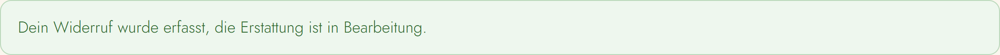
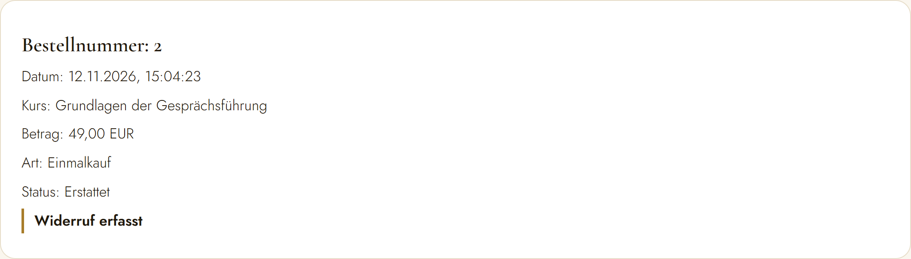
10 Datenschutz und Konto löschen
Meine Daten anfordern
Unter Mein Konto → Meine Daten anfordern lädst du mit Daten herunterladen eine Datei (JSON) mit deinen bei der Plattform gespeicherten personenbezogenen Daten herunter: Kontodaten, Bestellungen, Zugänge, Zustimmungen und Widerrufserklärungen.
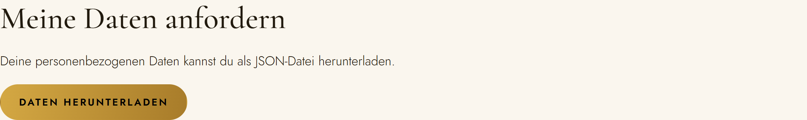
Konto löschen
- Gib unter Konto löschen dein aktuelles Passwort ein.
- Klicke auf Mein Konto endgültig löschen und bestätige die Rückfrage.
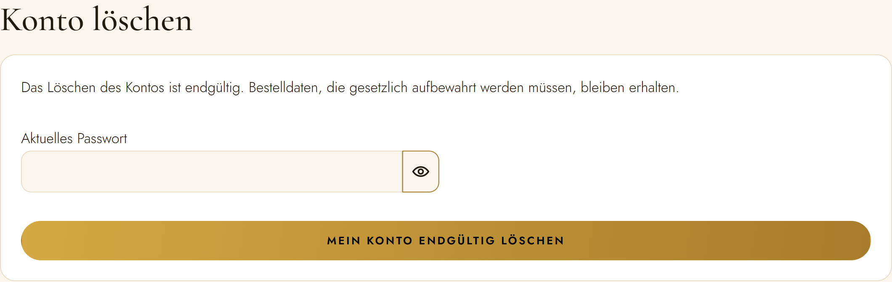
- Die Löschung ist endgültig. Deine Zugänge zu allen Kursen enden, du wirst abgemeldet.
- Bestimmte Bestell- und Abrechnungsdaten können aufgrund gesetzlicher Aufbewahrungspflichten erhalten bleiben. Näheres steht in der Datenschutzerklärung des Anbieters.
- Läuft noch ein Abo, ist die Löschung nicht möglich („Kündige zuerst dein Abo.“). Nach der Kündigung kannst du das Konto löschen.
Welche Daten zu welchem Zweck verarbeitet werden, steht in der Datenschutzerklärung des Anbieters (Link in der Fußzeile).
11 Hilfe und Kontakt
So erreichst du den Anbieter
- Vor dem Kauf: im Kasten Dein Anbieter auf jeder Kursseite steht eine E-Mail-Adresse für Fragen.
- Nach dem Kauf: die Kaufbestätigung nennt unter „Gut zu wissen“ die Adresse für Fragen.
- Rechtliches: In der Fußzeile jeder Seite findest du Impressum, Datenschutz, Teilnahmebedingungen, Widerruf des Vertrags und die Widerrufsbelehrung.
Häufige Meldungen
| Meldung | Was du tun kannst |
|---|---|
| Keine Kaufbestätigung per E-Mail erhalten oder Kurs nicht freigeschaltet | Schau im Spam-Ordner nach und prüfe unter „Meine Bestellungen“ den Status der Bestellung. Starte keinen zweiten Kauf. Bleibt der Kurs ohne Freischaltung, schreibe an die E-Mail-Adresse im Kasten „Dein Anbieter“ und nenne deine Bestellnummer. |
| Bestätige deine E-Mail-Adresse, um zu kaufen. | Link in der Bestätigungs-E-Mail öffnen oder eine neue E-Mail anfordern (Kapitel 2). |
| Zu viele Versuche. Bitte versuche es später erneut. | Etwas warten; bei vergessenem Passwort den Link anfordern (Kapitel 3). |
| Wir prüfen die Zahlung noch … | Später unter „Meine Kurse“ nachsehen. Nicht erneut bezahlen. |
| Die Zahlung wurde abgebrochen | Prüfe unter „Meine Bestellungen“, ob eine Zahlung erfasst wurde. Starte bei unklarem Zahlungsstatus keinen weiteren Kauf; wende dich im Zweifel an den Anbieter. |
| Der Verkauf ist vorübergehend pausiert. | Später erneut versuchen. Bereits gekaufte Kurse bleiben nutzbar. |
| Die Datei konnte jetzt nicht geladen werden. | Seite nach kurzer Zeit neu laden. |
| Die Verbindung zum Server hat nicht geklappt. | Internetverbindung prüfen und erneut versuchen. |
| Der Link ist ungültig oder abgelaufen. | Neuen Link anfordern (Bestätigung: 24 Stunden, Passwort: 30 Minuten gültig). |